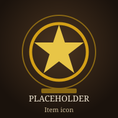

Sigils & Relics
Pick your profession, role, and fight to see recommended sigils and relics for fractals or raids. Community suggestions are stored in the database. Item details will later come from the Guild Wars 2 API.
Logged in as:
Mystery player
Find recommendations
Recommended gear (database)
Database placeholder — profession and role gear matches will load here.
| Slot | Item | Why |
|---|---|---|
| Sigil (main) | Superior Sigil of Force | +5% damage for general fractal DPS |
| Sigil (offhand / swap) | Superior Sigil of Accuracy | Crit chance for power builds |
| Relic | Relic of the Fractal | Extra agony resistance and fractal damage |
| Relic (boss) | Relic of Fireworks | Burst windows on short boss phases |
Item details from Guild Wars 2 API
Third-party service placeholder — item icons, descriptions, and stats
will be fetched from the official Guild Wars 2 API
(https://api.guildwars2.com).

Superior Sigil of Force
+5% Damage
API response placeholder